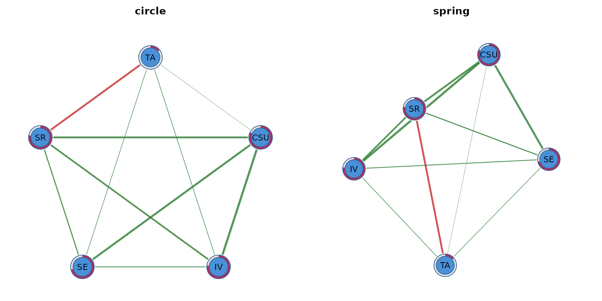
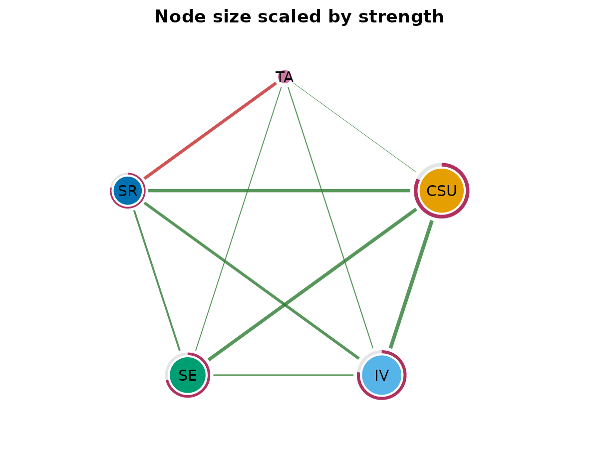
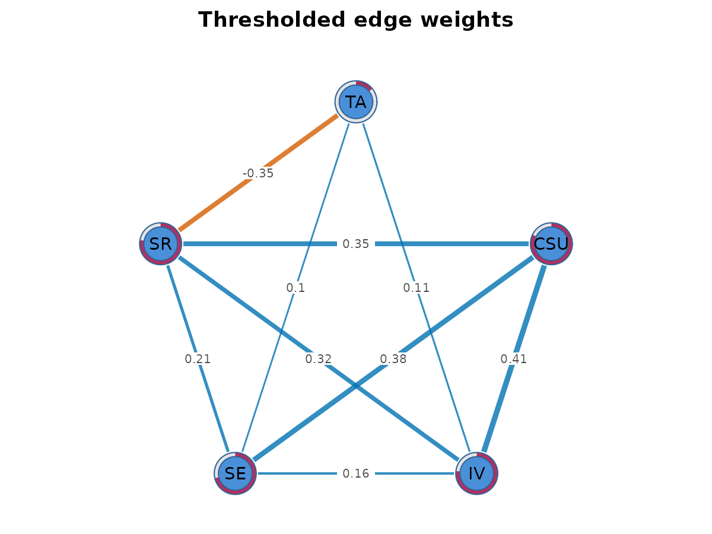
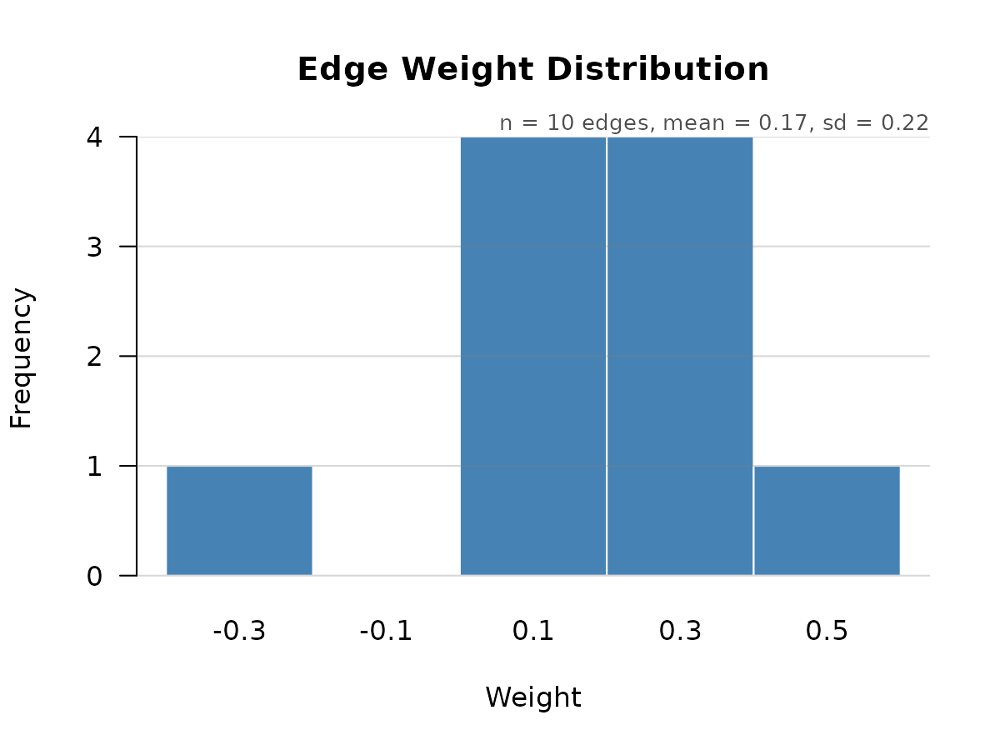
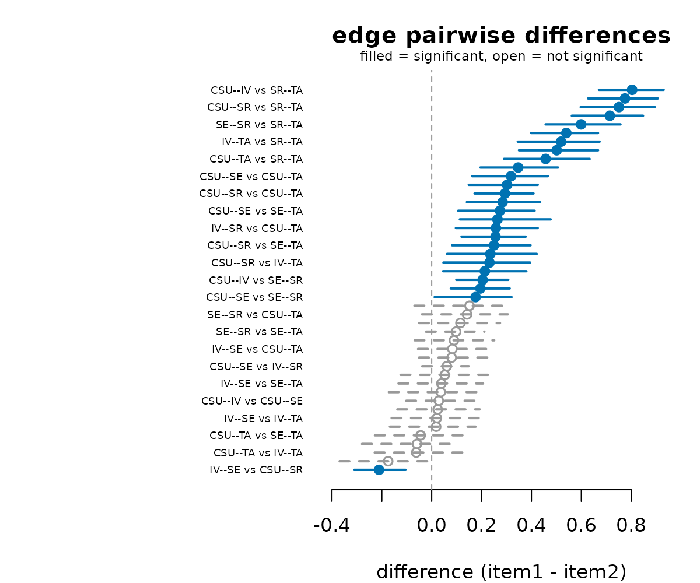
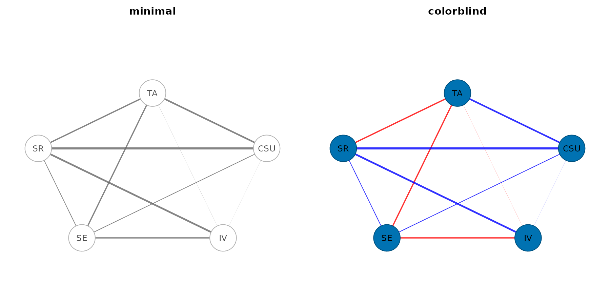
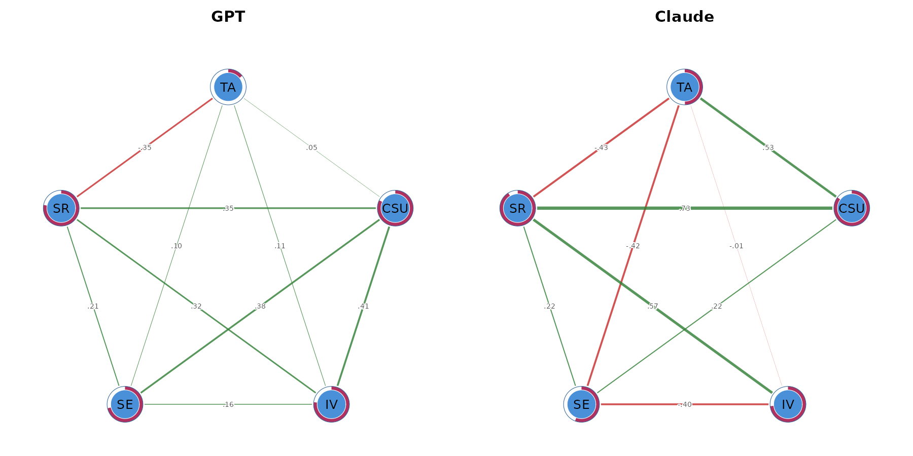

Visualizing networks with cograph
Written by Mohammed Saqr and Sonsoles López-Pernas
Source:vignettes/visualizing-with-cograph.Rmd
visualizing-with-cograph.RmdA psychological network is reported as a table of edge weights, but it is read as a figure. The figure shows at a glance which variables form a cluster, which variable connects two clusters, and where the negative associations lie. It can also mislead: the position of the nodes is chosen by a layout algorithm, edges of very different size can look alike, and colour alone does not reach every reader. Drawing a network well means encoding the sign and size of each edge so that they can be read, placing the nodes so that comparable figures share a layout, and keeping exact values available in the table that the figure summarizes.
This article draws a Gaussian graphical model of five self-regulated
learning constructs with the cograph package, from the
default figure to one ready for publication: layouts, node size and
colour, edge encoding and thresholds, the distribution of edge weights,
bootstrap diagnostics, themes, networks of several groups on a shared
layout, and export to a file. The chunks that draw with
cograph run only when it is installed.
Data
SRL_GPT holds 300 sets of responses to the Motivated
Strategies for Learning Questionnaire, each a construct score on a scale
from 1 to 7. The responses were generated by a large language model
(GPT) in a study of how such models answer psychological surveys (Saqr,
2025). A second set, SRL_Claude, holds 300 responses
generated by another model and is used for the group comparison.
-
Nodes:
CSU(cognitive strategy use),IV(intrinsic value),SE(self-efficacy),SR(self-regulation) andTA(test anxiety). - Observations: one row per respondent; the data are complete.
ebic_glasso() estimates the network: edges are partial
correlations selected by the extended Bayesian information
criterion.
fit <- ebic_glasso(SRL_GPT)
fit
#> <psychnet> glasso network
#> nodes: 5 edges: 10 (undirected)
#> lambda: 0.00861 gamma: 0.5
#> optimality (KKT residual): 2.21e-10The network has 10 edges. Nine are positive, from 0.049 to 0.412, and one, between self-regulation and test anxiety, is negative (-0.350); the Gaussian graphical models article interprets them.
What does the default figure show?
plot() on a fitted network draws it with
cograph::splot(). Each node is a construct and each edge a
partial correlation: the colour of an edge encodes its sign and the
width its absolute size.
plot(fit)
The four learning constructs appear as a cluster of wide edges of one
colour, and the edge between self-regulation and test anxiety stands out
in the other colour. Calling cograph::splot() directly
draws the same figure and accepts all the arguments used below.
cograph::splot(fit)
Where should the nodes be placed?
The layout argument chooses how nodes are placed. A
circular layout puts the nodes on a ring, so their positions are the
same in every figure with the same nodes. A spring layout pulls
connected nodes together, so clusters become visible; seed
fixes its random start so the figure can be reproduced.
op <- par(mfrow = c(1, 2), mar = c(1, 1, 3, 1))
cograph::splot(fit, layout = "circle", title = "circle")
cograph::splot(fit, layout = "spring", seed = 11, title = "spring")
par(op)In the spring layout, cognitive strategy use, self-regulation and intrinsic value, joined by the widest edges, are drawn close together, and test anxiety is placed at the margin with its single strong, negative edge. The circle is the better choice when several networks are compared; the spring layout when the structure of one network is the point.
How can nodes carry information?
Node size can show a node property.
scale_nodes_by = "strength" sizes each node by its
strength, and node_size_range sets the smallest and largest
size. The fill, border and label arguments set the remaining
appearance.
cograph::splot(
fit,
layout = "circle",
scale_nodes_by = "strength",
node_size_range = c(4, 12),
node_fill = c("#E69F00", "#56B4E9", "#009E73", "#0072B2", "#CC79A7"),
node_border_color = "white",
node_border_width = 2,
label_size = 0.9,
title = "Node size scaled by strength"
)
For a signed network, cograph computes this strength
from the signed edge weights, so the node sizes follow the expected
influence of net_centralities() rather than its absolute
strength. Cognitive strategy use (1.198) and intrinsic value (1.001) are
drawn largest and test anxiety (-0.091) smallest. Self-regulation, which
has the largest absolute strength (1.231), is drawn mid-sized because
its negative edge with test anxiety offsets its positive edges (expected
influence 0.532). A figure caption that says “size by strength” should
state which of the two is shown.
How should edges be encoded?
For a signed network, the edge encoding carries the result.
edge_positive_color and edge_negative_color
set the two sign colours, and edge_width_range maps
absolute size to width. threshold hides edges below an
absolute weight, and edge_labels prints each weight, so the
sign is readable from the number as well as from the colour.
cograph::splot(
fit,
layout = "circle",
threshold = 0.05,
edge_width_range = c(0.5, 5),
edge_positive_color = "#0072B2",
edge_negative_color = "#D55E00",
edge_labels = TRUE,
edge_label_size = 0.7,
edge_label_bg = "white",
title = "Thresholded edge weights"
)
The threshold of 0.05 hides one edge, cognitive strategy use with test anxiety (0.049), and leaves nine, each labelled with its partial correlation. A display threshold changes the figure, not the model, and is reported in the figure caption.
cograph::plot_edge_weights() draws the distribution of
the edge weights without a layout.
cograph::plot_edge_weights(fit)
The histogram shows one negative edge (-0.350), four positive edges below 0.2, three of them the edges of test anxiety, and five edges between 0.2 and 0.41 among the learning constructs; the mean edge weight is 0.17. It is a useful check on whether a display threshold separates groups of edges or cuts through one.
How precise are the edges?
A network figure shows point estimates. Their precision comes from
resampling. net_boot() refits the network to bootstrap
samples of the respondents and records the distribution of every edge;
plot() on the result draws each edge with its confidence
interval. The partial-correlation estimator keeps this example fast; an
applied analysis would use the graphical lasso with at least 1,000
resamples. The network reliability article covers these diagnostics in
full.
set.seed(1)
bs <- net_boot(SRL_GPT, method = "pcor", n_boot = 250, cores = 1)
bs
#> <psychnet_bootstrap> pcor, 250 resamples, 95% CI
#> 10 edges (9 significant), 5 nodes, measures: strength, expected_influence
plot(bs)
Nine of the ten edges have 95% intervals that exclude zero. The
exception is cognitive strategy use with test anxiety, the same small
edge that the threshold above removed. With
type = "edge_diff", the plot shows which pairs of edges
differ in size across the bootstrap samples:
plot(bs, type = "edge_diff")
difference_test() gives the same pairwise comparisons as
a table with confidence intervals, and style = "forest"
draws each difference with its interval.
plot(difference_test(bs, type = "edge"), style = "forest")
Of the 45 pairs of edges, 26 differ in size. The forest plot shows how large each difference is, which the box matrix does not.
How can a figure follow a house style?
The theme argument applies a set of colour and style
defaults without changing the model.
op <- par(mfrow = c(1, 2), mar = c(1, 1, 3, 1))
cograph::splot(fit, theme = "minimal", title = "minimal")
cograph::splot(fit, theme = "colorblind", title = "colorblind")
par(op)The colourblind theme uses colours that remain distinct for readers with the common forms of colour-vision deficiency; combined with edge labels, the sign of an edge can be read without colour.
How can networks of several groups be compared?
psychnet() with group estimates one network
per level of a grouping column. The example stacks the two response sets
and labels each row with its source.
grouped_srl <- rbind(
data.frame(SRL_GPT, source = "GPT", check.names = FALSE),
data.frame(SRL_Claude, source = "Claude", check.names = FALSE)
)
group_fit <- psychnet(grouped_srl, group = "source", method = "glasso")
summary(group_fit)
#> group nodes edges mean_abs_weight
#> 1 GPT 5 10 0.2444301
#> 2 Claude 5 10 0.3536997
cograph::splot(group_fit, layout = "circle", psych_styling = TRUE)
cograph::splot() draws the networks as a grid on one
layout, so a node has the same position in every panel and the panels
can be compared edge by edge. Both networks have 10 edges, but the mean
absolute edge weight is 0.354 for the Claude responses against 0.244 for
the GPT responses, and the shared layout makes the differences visible:
in the Claude network intrinsic value and self-efficacy are negatively
related, and test anxiety is positively related to cognitive strategy
use and negatively to self-efficacy. A formal test of the difference
requires net_compare().
How is the figure saved?
The filename, width, height
and res arguments write the figure to a file at a chosen
size and resolution.
cograph::splot(fit, layout = "circle", filename = "network.png",
width = 8, height = 8, res = 300)Summary of the arguments
| Task | Arguments |
|---|---|
| Layout |
layout, seed, layout_scale,
layout_margin
|
| Nodes |
node_size, scale_nodes_by,
node_size_range, node_fill,
node_shape
|
| Labels |
labels, label_size,
label_color, label_position
|
| Edges |
edge_width_range, edge_positive_color,
edge_negative_color, edge_alpha
|
| Filtering |
threshold, minimum,
maximum
|
| Edge labels |
edge_labels, edge_label_size,
edge_label_bg, edge_label_style
|
| Themes |
theme, background, title
|
| Export |
filename, width, height,
res
|
A network figure is read alongside its edge table: the figure shows the structure, the table gives the values, and a fixed layout makes figures of different groups comparable.
References
Saqr, M. (2025). Delving into the psychology of machines: Exploring the structure of self-regulated learning via LLM-generated survey responses. Computers in Human Behavior, 173, 108769. doi:10.1016/j.chb.2025.108769